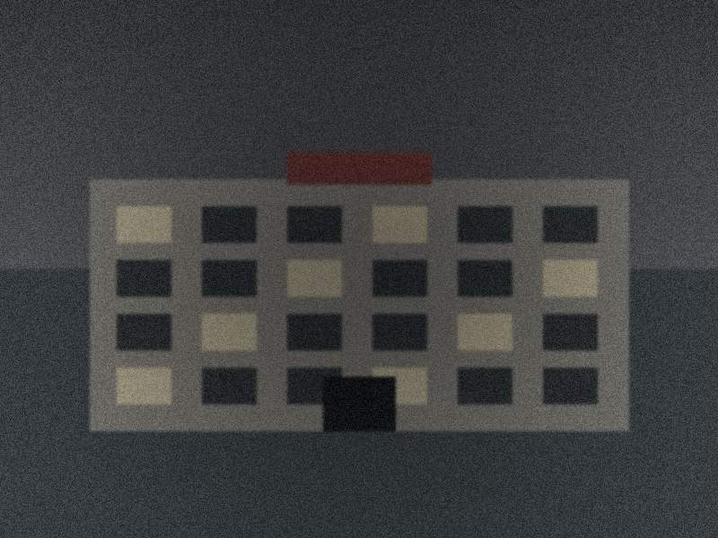
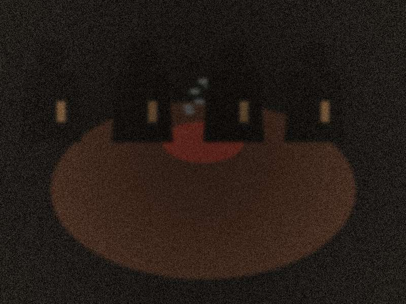

📰 致《新京报》深度调查部
记者会先发"7 具失踪尸体被倒卖"的社会新闻，不点名具体医院。
3 个加害者提前 2 周从鹤岗逃走。警方立案后 5 年内抓回 2 人，1 人至今在逃。
你爸在新闻里只是"知情旁观者"，没有任何法律后果。
但 4 号柜里你妈之外的另外 3 具尸体的去向，永远成了谜。
—— 你救了你爸，救不了那些其他"陈岚"——
⚠ 你确定要发吗？
· 陆建国（你爸）会被以"包庇罪"起诉，刑期 1~3 年，缓刑 3 年。
· 赵敏、周德厚、钱为民会被以"故意杀人 + 伪造公文 + 倒卖遗体"起诉，最高死刑。
· 你会失去这一年里爸爸唯一陪伴你的时间。
· 但是，你妈能回家。
· 4 号柜里其他 3 具尸体的家属也能找到答案。
⚠ 你确定关机吗？
· 没人会知道 2003 年那 17 个小时发生了什么。
· 没人会知道 4 号柜里是谁。
· 你爸还是你爸。一切不会改变。
· 但是，你再也不会知道妈妈的墓在哪。
· 2011 年 10 月 11 日，爸爸在 4 号冷柜旁用机房裁线刀自杀（你是几周后才知道的）。
· 你永远不会看到这封信。